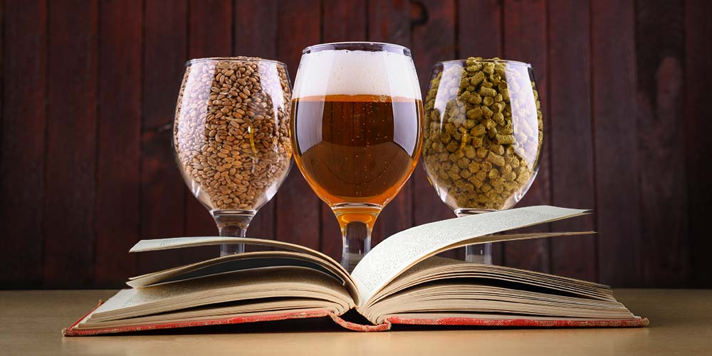

Patent Information
 The biggest piece of information to understand when looking at brewing patents ispreparation and not the actual ingredients. Brewers cannot patent a plant since
objectbviously plants cannot be patented. So instead, the way the ingredients are prepared
is what is most important to the eye of the law. Here is an example: Say there are two breweries
brewery 1 and Brewery 2. Say Brewery 1 brews a Pilsner (German Beer) and brewery 2 gets to taste it.
Brewery 2 can turn around and use the same ingredients but with a catch.
Brewery 2 needs to prepare the ingredients differently. They could do one of many things such as let the
ingredients boil a little longer, use more hops, or even let it ferment for an extra day or two.
in order to make sure their beer is authentic, they need to make sure the preparation differs from other breweries. By enforcing this, it sort of forces breweries to use different ingredients in order
to compensate for the new preparation. Although there are patent laws, in the brewing community,
the biggest coompliment is mimicking, so go ahead and recreate another brewer's beer, just be sure to
give credit where its due.